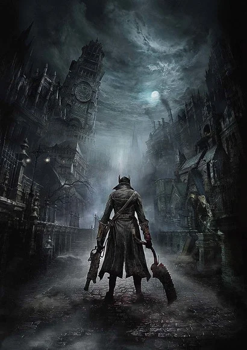

Nasci na cidade de Presidente Prudente, onde moro atualmente, mas por bem pouco não nasci na cidade de Cafelândia (sim, é a cidade do café) onde reside a maior parte da minha família. Na cidade de Presidente Prudente sempre morei em bairros próximos uns dos outros, então acabei desenvolvendo um afeto e amizade pela vizinhança que passei minha infância e adolescência tendo contato, já que, perto das casas que eu morava sempre havia um parque ou campo de futebol que eram sempre cheios de amigos os quais eu conhecia. Assim, na maior parte da minha infância, gostava muito de andar pelas ruas de bicicleta e fazer comprar em um pequeno bar da região com meu avô e meu primo, que sempre me acompanhavam.
Meu passatempo favorito são os jogos, conversar com meus amigos e algumas vezes leio um livro ou outro. Os gêneros de jogos que mais gosto são os mais desafiadores, que me obrigam a passar horas tentando desvendar o truque que me fará passar daquela fase ou algo do tipo, de maneira geral, gosto do desafio!
- Alguns dos jogos que já joguei e recomendo que experimentem caso curtam o gênero:
- Bloodborne
-
 Elden Ring
Elden Ring -
 Dark Souls (I e III)
Dark Souls (I e III)
Como dito anteriormente, li alguns livros durante minha vida mas não é o passatempo que mais gosto, porém, na época de escola o celular era proibido então eu meio que era obrigado a levar um livrinho para ler na aula (Não façam isso, prestem atenção na aula!). Dentre os livros que terminei em alguns meses de leitura estão a trilogia de O Espadachim de Carvão de Affonso Solano, os livros I e III de Medicina Macabra, Arséne Lupin, algumas obras de Julio Verne como Viagem ao centro da terra e Vinte mil léguas submarinas
Competências
Nível de escolaridade Ensino Fundamental Completo e Ensino Médio Completo - Concluído pelo Colégio Braga Mello, situado em Presidente Prudente
Nível Intermediário de Inglês - Lê bem e fala bem, compreende mediocremente.
Nível avançado no conhecimento informático - Anos de experiência com hardware e assistência técnica.
Conhecimento básico em Declaração de IRPF
| Se dá bem em equipe | Espírito otimista | Bem humorado | Educado | Responsável | Proativo |